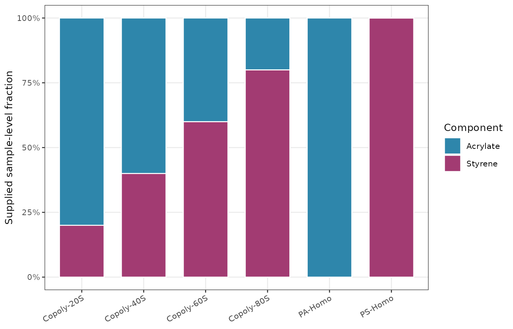
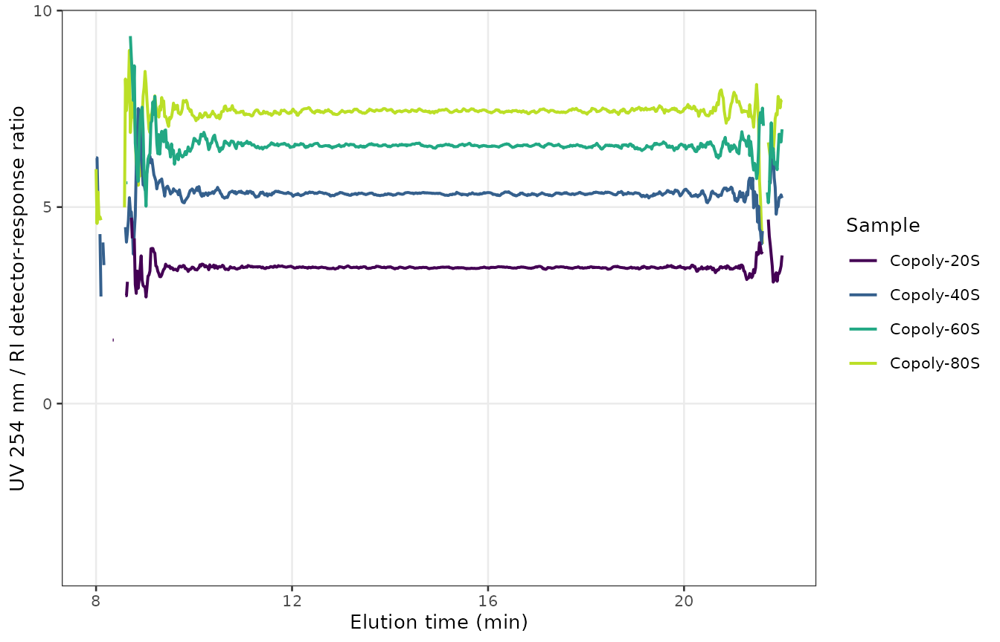

Scope
This vignette uses sec_copolymer, a synthetic dataset
with one supplied styrene fraction and one supplied molecular-weight
value per sample. The per-slice UV and RI signals can be used to
calculate a relative detector response profile. They do not, by
themselves, give a mass fraction.
step_sec_composition() requires four detector-response
coefficients calibrated from pure-component standards for the selected
input basis. The example dataset does not include those calibration
results, so the composition calculation below is shown as a template
rather than filled with assumed coefficients.
Sample-level composition values
library(measure)
#> Loading required package: recipes
#> Loading required package: dplyr
#>
#> Attaching package: 'dplyr'
#> The following objects are masked from 'package:stats':
#>
#> filter, lag
#> The following objects are masked from 'package:base':
#>
#> intersect, setdiff, setequal, union
#>
#> Attaching package: 'recipes'
#> The following object is masked from 'package:stats':
#>
#> step
library(measure.sec)
library(recipes)
library(dplyr)
library(ggplot2)
library(tidyr)
data(sec_copolymer, package = "measure.sec")
sample_composition <- sec_copolymer |>
distinct(sample_id, styrene_fraction) |>
mutate(acrylate_fraction = 1 - styrene_fraction) |>
pivot_longer(
cols = c(styrene_fraction, acrylate_fraction),
names_to = "component",
values_to = "fraction"
) |>
mutate(
component = recode(
component,
styrene_fraction = "Styrene",
acrylate_fraction = "Acrylate"
)
)
sample_composition
#> # A tibble: 12 × 3
#> sample_id component fraction
#> <chr> <chr> <dbl>
#> 1 Copoly-20S Styrene 0.2
#> 2 Copoly-20S Acrylate 0.8
#> 3 Copoly-40S Styrene 0.4
#> 4 Copoly-40S Acrylate 0.6
#> 5 Copoly-60S Styrene 0.6
#> 6 Copoly-60S Acrylate 0.4
#> 7 Copoly-80S Styrene 0.8
#> 8 Copoly-80S Acrylate 0.2
#> 9 PS-Homo Styrene 1
#> 10 PS-Homo Acrylate 0
#> 11 PA-Homo Styrene 0
#> 12 PA-Homo Acrylate 1The bars use the sample-level fraction fields supplied with the synthetic dataset. They do not show slice-level composition recovered from the detector signals.
ggplot(
sample_composition,
aes(x = sample_id, y = fraction, fill = component)
) +
geom_col(width = 0.72, colour = "white") +
scale_y_continuous(
labels = scales::label_percent(),
limits = c(0, 1),
breaks = seq(0, 1, by = 0.25)
) +
scale_fill_manual(values = c(Styrene = "#A23B72", Acrylate = "#2E86AB")) +
labs(
x = NULL,
y = "Supplied sample-level fraction",
fill = "Component"
) +
theme_measure_sec() +
theme(axis.text.x = element_text(angle = 30, hjust = 1))
Sample-level styrene and acrylate fractions supplied with the synthetic dataset. Acrylate is shown as the complement of the supplied styrene fraction.
UV/RI response profiles
step_sec_uv_ri_ratio() retains a relative UV-to-RI
response curve. Baseline correction is applied before calculating the
ratio. The step sets ratios to NA where the RI signal is
below its configured signal threshold; the plot keeps those gaps instead
of connecting across them.
copolymer_samples <- sec_copolymer |>
filter(startsWith(sample_id, "Copoly"))
ratio_recipe <- recipe(
ri_signal + uv_254_signal + elution_time ~ sample_id,
data = copolymer_samples
) |>
update_role(sample_id, new_role = "id") |>
step_measure_input_long(
ri_signal,
location = vars(elution_time),
col_name = "ri"
) |>
step_measure_input_long(
uv_254_signal,
location = vars(elution_time),
col_name = "uv"
) |>
step_sec_baseline(measures = c("ri", "uv")) |>
step_sec_uv_ri_ratio(
uv_col = "uv",
ri_col = "ri",
smooth = TRUE
)
ratio_results <- prep(ratio_recipe) |>
bake(new_data = NULL)
sample_fractions <- copolymer_samples |>
distinct(sample_id, styrene_fraction)
ratio_data <- ratio_results |>
select(sample_id, uv_ri_ratio) |>
unnest(uv_ri_ratio) |>
left_join(sample_fractions, by = "sample_id") |>
group_by(sample_id) |>
mutate(segment = cumsum(is.na(value))) |>
filter(!is.na(value)) |>
ungroup()
head(ratio_data)
#> # A tibble: 6 × 5
#> sample_id location value styrene_fraction segment
#> <chr> <dbl> <dbl> <dbl> <int>
#> 1 Copoly-20S 8.02 4.24 0.2 1
#> 2 Copoly-20S 8.24 2.20 0.2 11
#> 3 Copoly-20S 8.34 1.62 0.2 15
#> 4 Copoly-20S 8.36 1.62 0.2 15
#> 5 Copoly-20S 8.48 3.72 0.2 20
#> 6 Copoly-20S 8.6 2.74 0.2 25
ggplot(
ratio_data,
aes(
x = location,
y = value,
colour = sample_id,
group = interaction(sample_id, segment)
)
) +
geom_line(linewidth = 0.7) +
scale_colour_viridis_d(end = 0.9) +
labs(
x = "Elution time (min)",
y = "UV 254 nm / RI detector-response ratio",
colour = "Sample"
) +
theme_measure_sec()
Baseline-corrected UV-to-RI detector-response ratios calculated by
step_sec_uv_ri_ratio() for the four synthetic copolymer
samples. The ratio is not calibrated to a mass fraction.
The ratio uses the native detector-response basis. Its magnitude depends on the detector channels and their calibration. A changing profile can be investigated as possible compositional variation, but interpreting it as composition requires response calibration and suitable detector alignment.
Calculating component mass fractions
Use step_sec_composition() after measuring the four
response coefficients from pure-component standards on the same
instrument and with the same signal basis. The code below leaves those
measured values as inputs because they are not supplied by
sec_copolymer.
composition_recipe <- recipe(
ri_signal + uv_254_signal + elution_time ~ sample_id,
data = copolymer_samples
) |>
update_role(sample_id, new_role = "id") |>
step_measure_input_long(
ri_signal,
location = vars(elution_time),
col_name = "ri"
) |>
step_measure_input_long(
uv_254_signal,
location = vars(elution_time),
col_name = "uv"
) |>
step_sec_baseline(measures = c("ri", "uv")) |>
step_sec_composition(
uv_col = "uv",
ri_col = "ri",
component_a_uv = styrene_uv_response,
component_a_ri = styrene_ri_response,
component_b_uv = acrylate_uv_response,
component_b_ri = acrylate_ri_response,
output_col = "styrene_fraction"
)The response coefficients must describe measured detector outputs per
concentration for the selected basis. Literature extinction coefficients
or dn/dc values alone do not supply these
instrument-specific coefficients.
The mw column in sec_copolymer is a
supplied sample-level value, repeated across the elution-time rows. It
is not a calibrated per-slice molecular-weight curve, so these examples
do not plot within-sample composition against MW.
See also
- Getting started — basic SEC workflow
- Multi-detector SEC — detector processing and limits
- Calibration management — SEC calibrations
- Exporting results — tables and files
Session info
sessionInfo()
#> R version 4.6.2 (2026-10-29)
#> Platform: x86_64-pc-linux-gnu
#> Running under: Ubuntu 26.04.1 LTS
#>
#> Matrix products: default
#> BLAS: /usr/lib/x86_64-linux-gnu/openblas-pthread/libblas.so.3
#> LAPACK: /usr/lib/x86_64-linux-gnu/openblas-pthread/libopenblasp-r0.3.32.so; LAPACK version 3.12.0
#>
#> locale:
#> [1] LC_CTYPE=C.UTF-8 LC_NUMERIC=C LC_TIME=C.UTF-8
#> [4] LC_COLLATE=C.UTF-8 LC_MONETARY=C.UTF-8 LC_MESSAGES=C.UTF-8
#> [7] LC_PAPER=C.UTF-8 LC_NAME=C LC_ADDRESS=C
#> [10] LC_TELEPHONE=C LC_MEASUREMENT=C.UTF-8 LC_IDENTIFICATION=C
#>
#> time zone: UTC
#> tzcode source: system (glibc)
#>
#> attached base packages:
#> [1] stats graphics grDevices utils datasets methods base
#>
#> other attached packages:
#> [1] tidyr_1.3.2 ggplot2_4.0.4 measure.sec_0.0.0.9000
#> [4] measure_0.0.1.9004 recipes_1.4.0 dplyr_1.2.1
#>
#> loaded via a namespace (and not attached):
#> [1] gtable_0.3.6 xfun_0.62 bslib_0.12.0
#> [4] lattice_0.23-1 vctrs_0.7.3 tools_4.6.2
#> [7] generics_0.1.4 parallel_4.6.2 tibble_3.3.1
#> [10] pkgconfig_2.0.3 Matrix_1.7-6 data.table_1.18.6.1
#> [13] RColorBrewer_1.1-3 S7_0.2.2 desc_1.4.3
#> [16] lifecycle_1.0.5 compiler_4.6.2 farver_2.1.2
#> [19] textshaping_1.0.5 codetools_0.2-20 htmltools_0.5.9
#> [22] class_7.3-24 sass_0.4.10 yaml_2.3.12
#> [25] prodlim_2026.03.11 pillar_1.11.1 pkgdown_2.2.1
#> [28] jquerylib_0.1.4 MASS_7.3-66 cachem_1.1.0
#> [31] gower_1.0.2 rpart_4.1.27 parallelly_1.50.0
#> [34] lava_1.11 tidyselect_1.2.1 digest_0.6.39
#> [37] future_1.82.0 purrr_1.2.2 listenv_1.1.0
#> [40] labeling_0.4.3 splines_4.6.2 fastmap_1.2.0
#> [43] grid_4.6.2 cli_3.6.6 magrittr_2.0.5
#> [46] utf8_1.2.6 survival_3.8-12 future.apply_1.21.0
#> [49] withr_3.0.3 scales_1.4.0 lubridate_1.9.5
#> [52] timechange_0.4.0 rmarkdown_2.32 globals_0.20.0
#> [55] otel_0.3.0 nnet_7.3-21 timeDate_4052.112
#> [58] ragg_1.5.2 evaluate_1.0.5 knitr_1.52
#> [61] hardhat_1.4.3 viridisLite_0.4.3 rlang_1.3.0
#> [64] Rcpp_1.1.2 glue_1.8.1 ipred_0.9-16
#> [67] jsonlite_2.0.0 R6_2.6.1 systemfonts_1.3.3
#> [70] fs_2.1.0